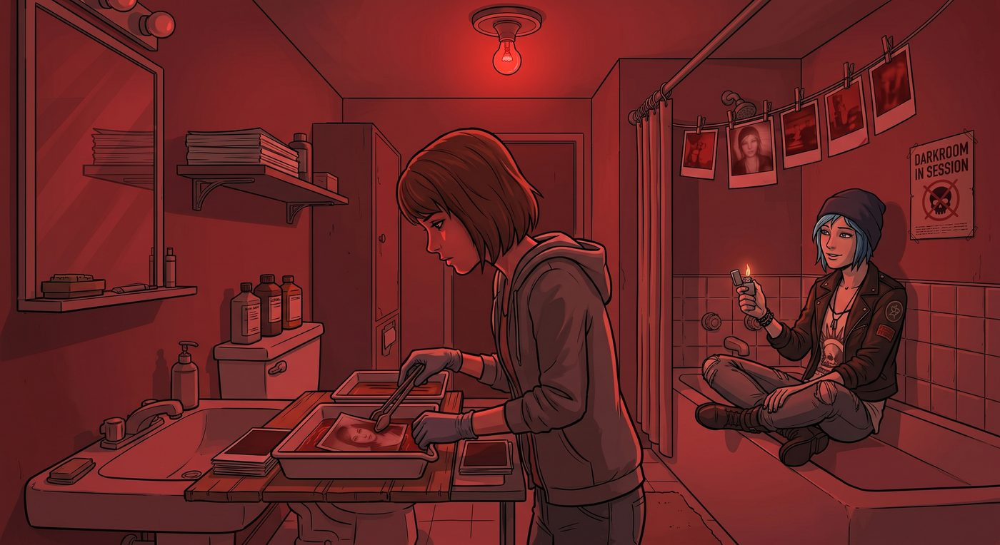
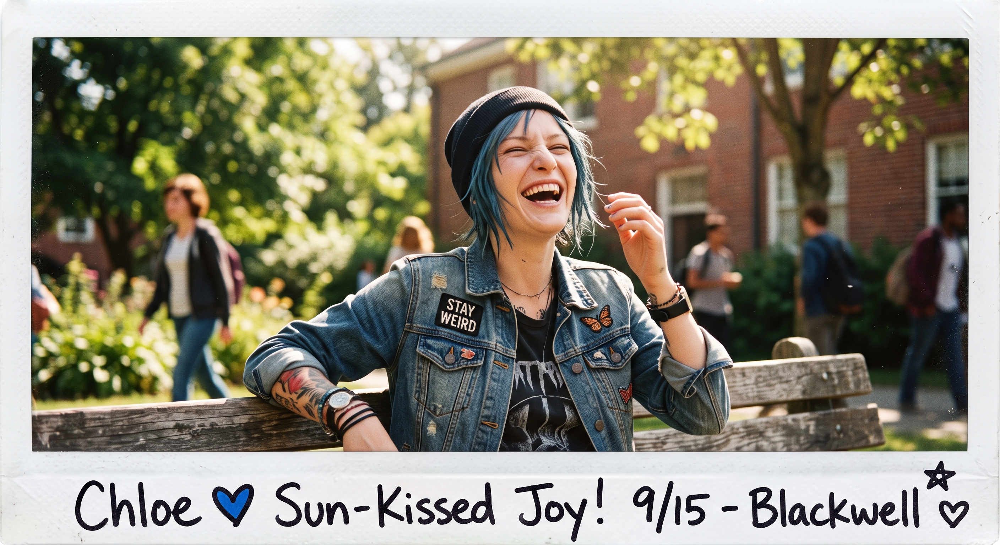
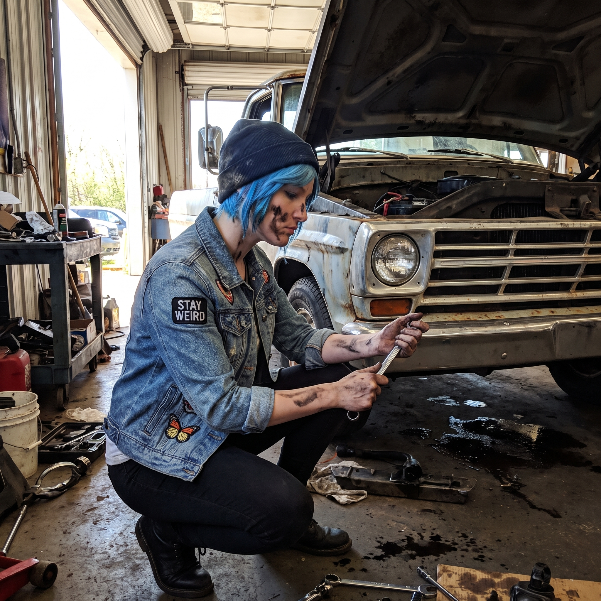
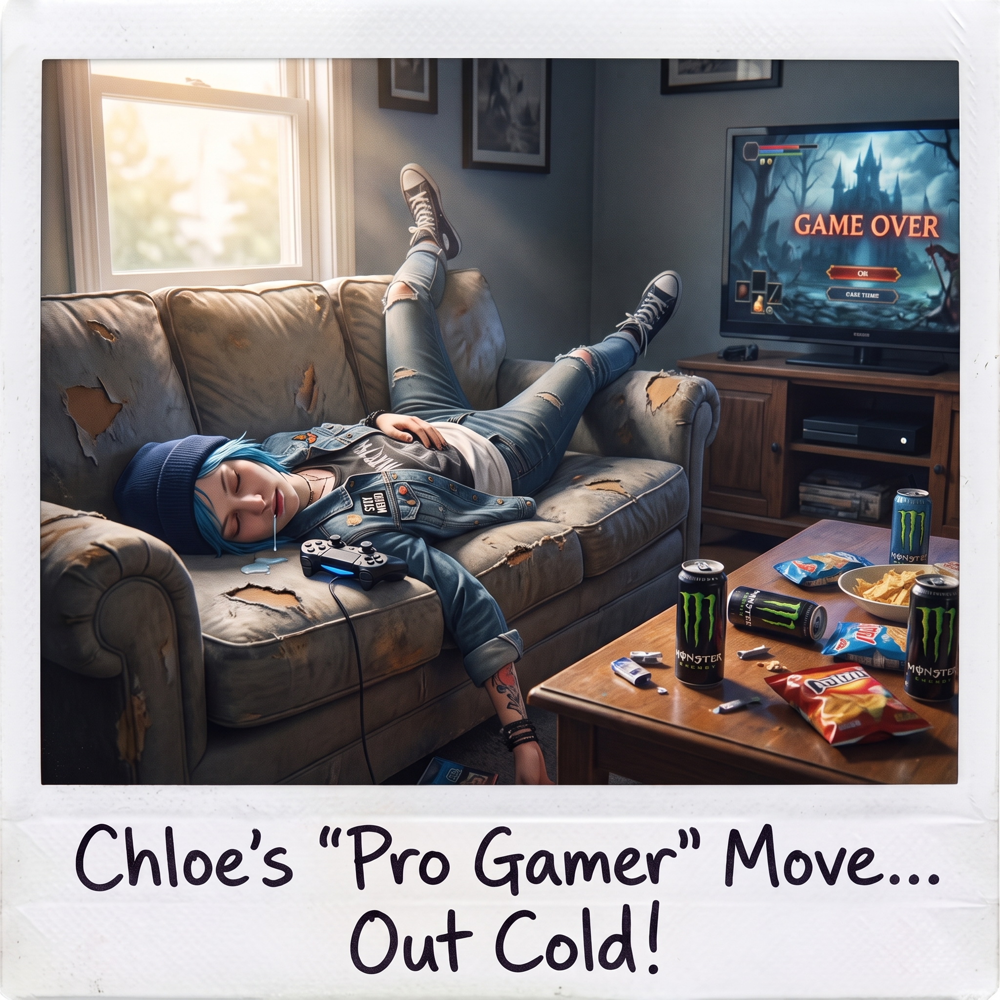
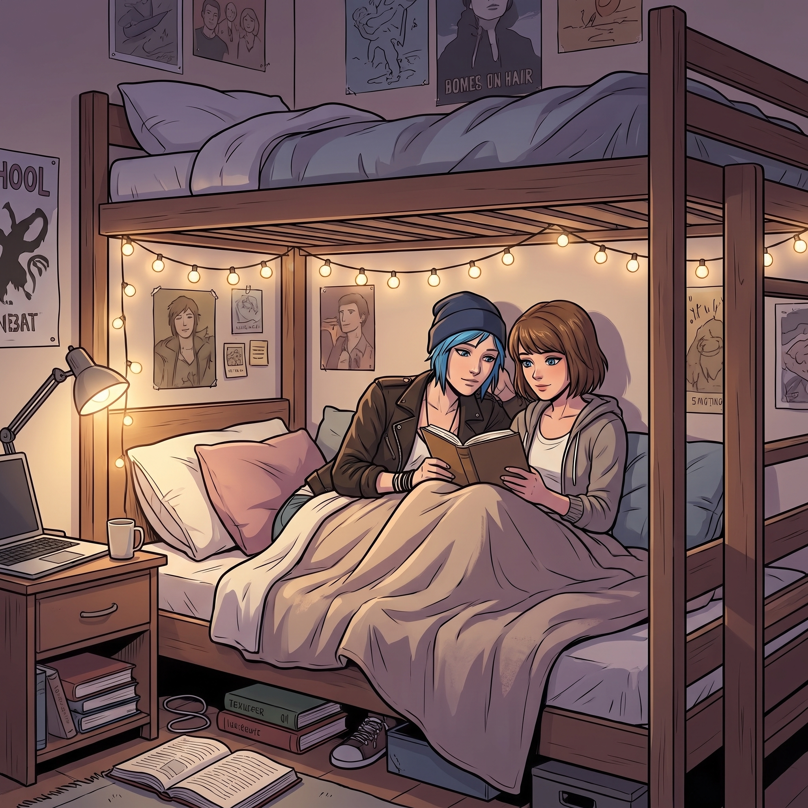

暗房與修羅場





一、浴缸邊的抓拍
打通後的套間,浴室很快被 Max 徵用,裝上一顆暗紅色燈泡,改造成了一間簡陋卻管用的臨時暗房。
每到深夜,Chloe 就會盤腿坐在浴缸邊緣,百無聊賴地轉著打火機,看著 Max 在昏暗的紅光下專注地漂洗顯影中的相紙——那種近乎虔誠的專注神情,是 Chloe 這輩子見過最安靜、也最迷人的樣子。
顯影盤裡陸續浮現出的照片,大多是些毫無準備的抓拍——Chloe 在陽光下笑得毫無形象、蹲在皮卡引擎蓋前修車時滿手油污的側臉、又或者某次熬夜打遊戲、四腳朝天睡死在沙發上的糗態。
「妳到底存了多少張我睡覺的醜照。」Chloe 湊過去,看著晾曬架上一整排「證據」,又好氣又好笑。
「藝術創作,」Max 頭也不抬地繼續手邊的工作,語氣理所當然,「不需要對象同意。」
「這話,」Chloe 挑眉,「怎麼聽著這麼耳熟。」
二、修羅場前奏
暗房的寧靜美好,總會在考試週前夕被徹底打破。
「Chloe Price,」某個週日晚上,Max 戴著眼鏡,一臉嚴肅地坐在書桌前,面前攤開著厚厚一疊筆記,指節在桌面上敲出規律的節奏,「藝術史小考,還有三天。」
Chloe 整個人癱在毯子堆裡,把臉埋進枕頭,發出一聲悽慘的哀嚎:「Maxine,我的大腦不是拿來記十九世紀那堆流派名字的!求妳了,直接把答案抄給我吧!」
「不行,」Max 語氣不容置疑,伸手把枕頭從她臉上扯開,「妳好歹得先自己看一遍。」
三、Max 的談判
Chloe 哀嚎著坐起身,眼神哀怨地瞪著攤開的筆記,忽然像是想起什麼似的,眼睛一亮。
「等等,」她說,「妳這麼逼著我讀書,我是不是能提個交換條件?」
「什麼條件?」
「妳幫我把這堆破爛複習完,」Chloe 一臉討價還價的認真,「我就……不跟妳計較上次那些偷拍的醜照。」
Max 挑眉,沒有立刻答應,反而饒有興致地琢磨了幾秒,忽然勾起一抹狡黠的笑。
「那我也提個條件,」她慢悠悠地開口,「妳陪我讀完這整份筆記,期末考前每天都要按進度複習——作為交換,妳得答應我,找一天,把那套蕾絲女僕裝重新穿一次,讓我拍一組『私人收藏』。」
Chloe 瞬間瞪大眼睛:「妳這是拿我的絕招來對付我?!」
「什麼絕招?」
「以前都是我拿黑歷史威脅妳,」Chloe 一臉難以置信,「現在妳學會反過來用這招對付我了?這也太不講武德了吧!」
「妳自己教的,」Max 眨眨眼,毫無愧疚感,「近墨者黑。」
四、私人收藏的約定
Chloe 咬著牙,在「乖乖讀書」和「再次淪陷女僕裝」之間掙扎了好一會兒,最終還是敗下陣來——期末成績單上的紅字,終究比那套蕾絲圍裙更讓人恐懼。
「行,」她從牙縫裡擠出這句話,「但妳保證,不會把那些照片傳到任何地方去。」
「當然不會,」Max 認真地點頭,語氣裡少了平時的調侃,多了幾分認真的鄭重,「就只是我們兩個人的小秘密,鎖在我自己的底片盒裡,誰都看不到。」
Chloe 盯著她的眼睛看了兩秒,像是在確認這份承諾的真實性,最終妥協地嘆了口氣,伸手不情不願地拿起那本藝術史筆記。
「行吧,」她嘟囔著翻開第一頁,「看在妳這麼誠懇的份上。」
Max 滿意地笑了,湊過去,兩人的肩膀靠在一起,昏黃的檯燈光線下,開始正式進入複習環節。
「文藝復興時期,」Max 指著筆記上的重點,「代表畫家有達文西、米開朗基羅,還有拉斐爾,這三位並稱『文藝復興三傑』。」
「這個我知道,」Chloe 一臉自信地接話,「達文西就是畫《蒙娜麗莎的微笑》那個,順便還發明了直升機和坦克對吧?米開朗基羅是雕大衛像的,拉斐爾嘛……」她皺眉苦思了兩秒,一臉恍然大悟,「拉斐爾是忍者龜裡那隻戴紅色頭巾的!」
Max 停頓了兩秒,筆尖懸在半空,一時不知道該從何吐槽起。
「妳把忍者龜的設定,」她艱難地開口,「代入了藝術史考試?」
「反正名字一樣啊!」Chloe振振有詞。
「那巴洛克風格呢,」Max 決定跳過這個災難現場,翻到下一頁,「妳說說看,巴洛克藝術的特徵是什麼?」
「這個我確定知道,」Chloe 挺直腰背,一臉篤定,「巴洛克就是那個……浮誇、金光閃閃、到處都是天使屁股的風格對吧?反正就是看起來很貴、很喘不過氣的那種。」
「……」Max 又沉默了兩秒,「妳這個形容,勉強算是抓到一點皮毛,但『天使屁股』不是正式的藝術術語。」
「那考試的時候,」Chloe 一臉認真,「我寫『浮誇風』,老師會扣多少分?」
Max 闔上筆記,深吸一口氣,眼神裡那種危險的、努力壓抑著怒氣的笑意,又浮現了出來。
「Chloe。」
「幹嘛?」
「妳過來。」
「等等,」Chloe 敏銳地嗅到不對勁,下意識往牆角挪了挪,「妳這什麼表情,我怎麼覺得有點眼熟又有點嚇人。」
「我只是想,」Max 一步步逼近,語氣依然帶笑,「親自幫妳把這些『瞎掰知識』從腦子裡糾正過來。」
「這不能怪我,」Chloe 舉著筆記邊笑邊躲,「這叫『創意聯想記憶法』!」
「創意聯想個頭,」Max 猛地欺身撲過去,手臂精準一繞,那套熟悉的固技招式再次上演,把 Chloe 的手臂穩穩鎖進臂彎裡,動彈不得,「妳把拉斐爾說成忍者龜,還敢狡辯?投不投降?」
「唔——」Chloe 誇張地哀嚎,在毯子堆裡拚命掙扎,「投降投降!老娘錯了行了吧!拉斐爾不是忍者龜!巴洛克也不是浮誇風!」
「那正確答案是什麼?」Max 手上的力道絲毫不放鬆。
「我不知道啊!」Chloe 崩潰慘叫,「妳先放開我,我才能好好回憶妳剛才說了什麼!」
兩人在堆滿毯子和筆記的地板上鬧成一團,笑聲和求饒聲交織在一起,原本嚴肅的複習計畫,徹底演變成一場混亂又溫馨的拉鋸戰。
浴室裡,那盞暗紅色燈泡還亮著,顯影盤裡最新一張照片,靜靜地浮現出兩人依偎讀書的側影——這張,連 Chloe 自己都沒有察覺,是什麼時候被偷拍下來的。